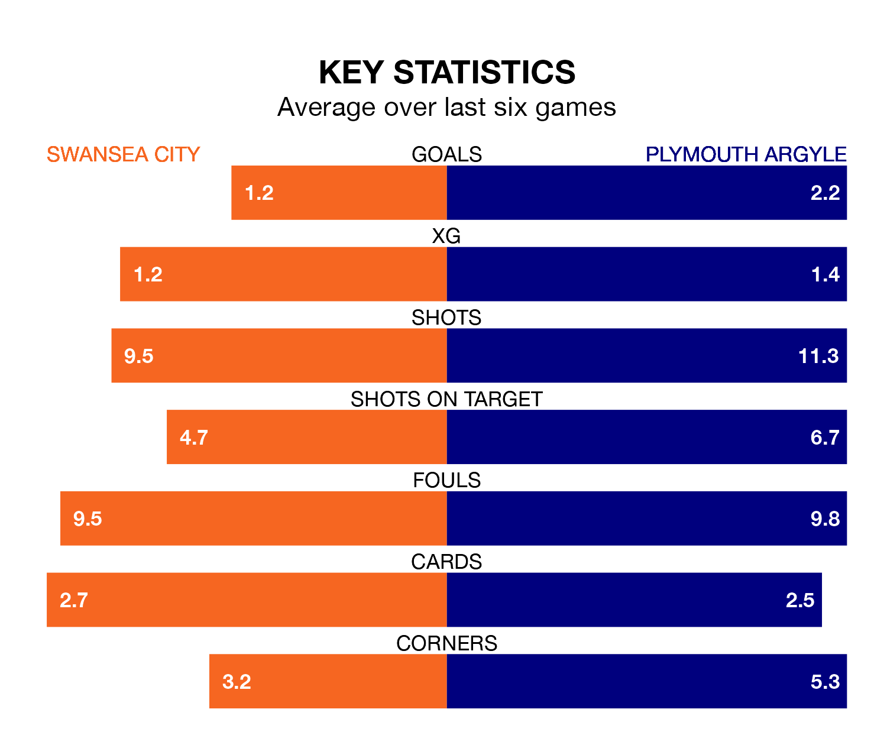

Plymouth Argyle travel to Swansea City on Saturday in EFL Championship.
The visitors come into the game on the back of a win in their last match, having beaten Cardiff City 3-1 at home, with two goals from Ryan Hardie and one from Morgan Whittaker.
The Swans, meanwhile, lost their last match, 3-1 against Leicester City, with their goal scored by Joe Allen.
With 47 goals in 28 games so far this season, Plymouth are scoring more than average in the league with 1.7 goals per game. But they are conceding more than average too, letting in 47 goals at a rate of 1.7 per game.
Swansea, meanwhile, are below average scorers, with 1.3 goals per game, compared to a league average of 1.4. They have conceded 1.6 goals per game.
In Whittaker, Argyle have one of the league's sharpest shooters so far this season. He has notched 15 goals in 28 appearances, to sit second in the scoring charts.
His goal rate of one every 159 minutes is quicker than that of Joël Piroe, City's top scorer with a goal every 214 minutes, and a total of 10 goals in 28 games.
The Swans are in disappointing form in EFL Championship, with one win and two draws from their last six games.
With a win and four draws over that period, the Pilgrims' form is slightly better – they have taken seven points from 18, compared to the hosts' five.
Swansea are 17th in the table after 29 games, of which they have won eight and drawn nine, earning 33 points.
The away side are two places ahead of Swansea in 15th, with eight wins and nine draws putting them on the same number of points.
In the last three years, Swansea and Plymouth have played each other on three occasions. Swansea won two of them and they drew once.
Their last meeting was on October 7, when Swansea won 3-1 away.
Saturday's match will be refereed by Samuel Allison, who has taken charge of eight EFL Championship games so far this season, issuing one red card and booking 36 players. He has awarded one penalty.
The last Swansea game Allison refereed was a 3-1 away loss to Leeds United on November 29. He is yet to oversee a match featuring Plymouth this season.
Updated: 15:45 (UTC), 02/02/24